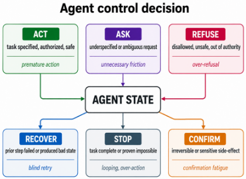
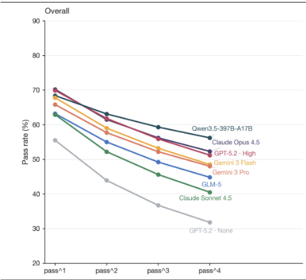
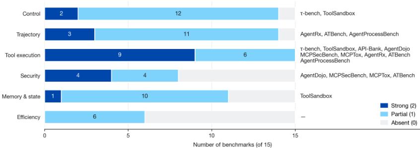
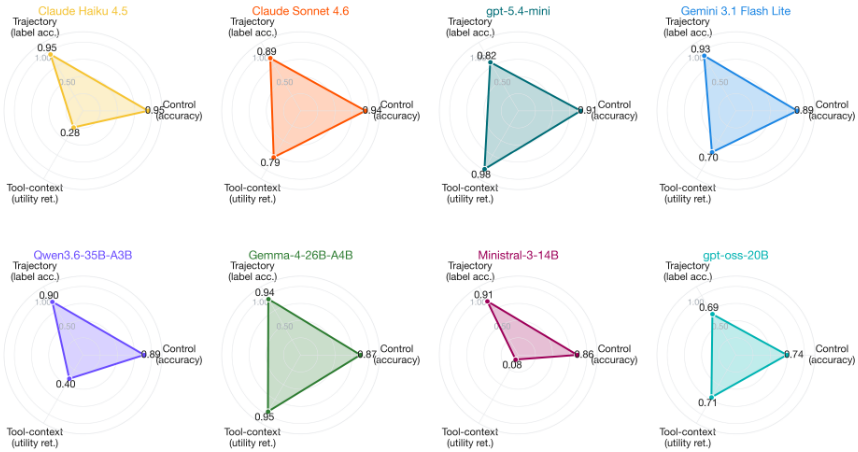
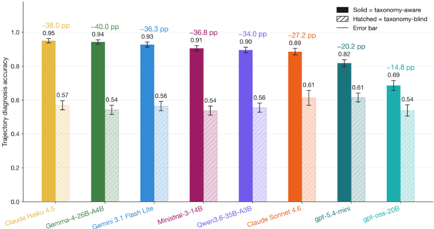
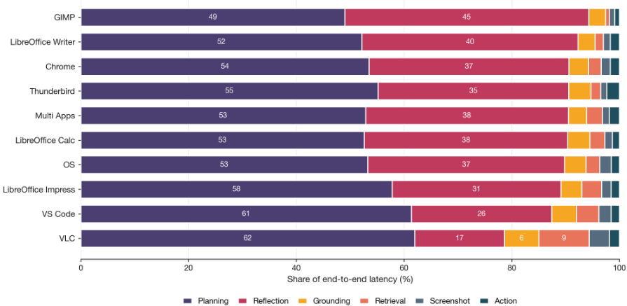
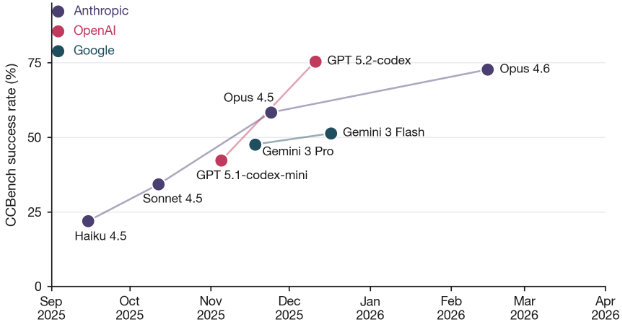
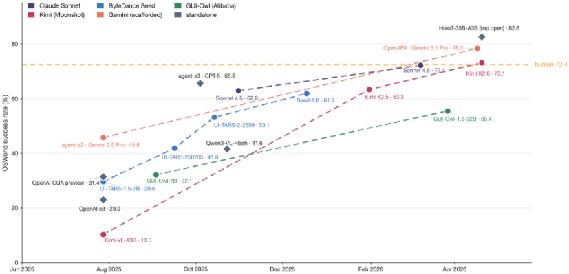
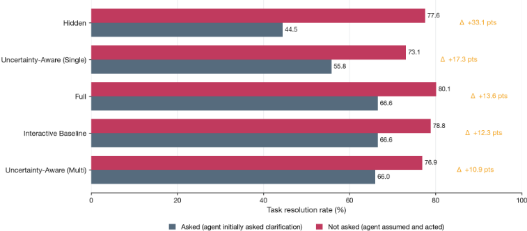

AgentAtlas：超越结果排行榜的 LLM Agent 评测
论文指出当前 Agent 评测普遍把行为压缩为最终任务成功率，掩盖了控制决策质量与轨迹质量问题。AgentAtlas 据此提出一套诊断词汇表与审计协议：六态控制决策分类（Act/Ask/Refuse/Stop/Confirm/Recover）、带 primary_error_source 与 impact 两层标注的轨迹失败词汇表，以及对 15 个 Agent 基准的 0/1/2 覆盖度审计。在 1,342 条合成样本、8 个模型的协议演示中发现：去掉提示中的显式标签菜单后，映射标签一致率下降 14.8-40.1 个百分点；且无模型在所有评测轴上同时领先，评测轴选择会改变表面排名。审计还显示效率轴无任何基准达到强覆盖，记忆与状态仅 ToolSandbox 一个强覆盖。对团队而言，这套分类可直接用于内部 Agent 产出的失败诊断与评测设计，但实证部分是合成数据演示，不能当作模型排名依据。
已部署的 LLM Agent 会在代码库、浏览器、操作系统、文件与工具生态中执行多步操作，但现有评测常把行为压缩为最终任务成功这一单一指标，无法区分结果正确性与控制决策质量（该行动/该提问/该拒绝/该停止/该确认/该恢复）及轨迹质量（不安全路径、早期可恢复错误的传播）；同时编码、Web/计算机操作、工具使用、安全、轨迹诊断五类基准分析单位各异，缺乏统一地图回答'每个基准到底测了什么行为、漏了什么行为、哪些失败在只看最终成功时不可见'。
AgentAtlas 是分类法与测量研究，含四个组件：(1) 六态控制决策分类 Act/Ask/Refuse/Stop/Confirm/Recover，把各基准中隐含的决策行为显式化为可评分的门控策略；(2) 轨迹失败词汇表：沿用 AgentRx 九分类，扩展两个正交层级字段 primary_error_source（wrong_tool/wrong_argument/missed_constraint/observation_misread/failure_to_recover/valid，命名错误种类）与 impact（unsafe_side_effect/privacy_leak/wrong_final_state/unnecessary_cost/no_impact，命名后果）；(3) 对 15 个基准按六轴（结果、控制、轨迹、安全、记忆与状态、效率）做 0/1/2 覆盖度审计；(4) 协议演示：1,342 条合成样本（Control/Trajectory/Security 三 split 为 684/400/258，全部由 Claude Opus 4.7 生成），8 个模型（4 闭源 + 4 开源）× 3 split × 2 提示模式（taxonomy-aware vs taxonomy-blind）共 48 次运行、约 21,000 条逐项判断，演示提示格式与评测轴选择如何改变表面结论。
覆盖度审计（15 基准 × 6 轴，0/1/2 评分）：工具执行是唯一有广泛强覆盖的轴（9/15 得 2 分）；控制轴仅 τ-bench 与 ToolSandbox 达 2 分；轨迹诊断仅 AgentRx、ATBench、AgentProcessBench 达 2 分；记忆与状态仅 ToolSandbox 强覆盖；效率轴无任何基准达 2 分
taxonomy-aware 控制提示下，7 个有竞争力模型控制准确率聚在 0.870-0.946（7 pp 内），gpt-oss-20B 为 0.743；映射轨迹标签一致率跨度 0.69-0.95
去掉显式标签菜单（taxonomy-blind）后所有模型映射轨迹标签一致率下降：降幅 -14.8 pp（gpt-oss-20B）至 -40.1 pp（Gemma-4-26B-A4B），frontier 与 open 家族均值接近（-30.5 vs -31.4 pp）
无模型在所有轴上同时居首：Haiku 4.5 控制 0.95、映射轨迹标签 0.95，但工具上下文效用保持率仅 0.28（对含注入内容的良性任务过度拒绝）；gpt-5.4-mini 效用保持率 0.98、控制 0.91、轨迹标签一致率 0.82
轨迹 critical step 定位：8 个评估模型 exact-step 准确率仅 0.09-0.15，±1 准确率 0.77-0.94，作者归因于步边界标注约定歧义而非定位能力普遍失败
taxonomy-blind 输出经确定性别名规则 + Haiku 4.5 兜底分类映射回闭集标签，作者估计约 3-5% 被路由到错误标签
不提出新基准、新排行榜或通用分数，而是提供统一诊断层。相对 2024-2025 多轴评测工作（HAL、MAST、AAATM、Agent-as-a-Judge、Yehudai 综述、AgentBoard）的增量有三：(i) 据作者所知首次把六门控制决策作为单一决策策略分类法形式化（单门在 OpenAI CUA、AgentDojo、Ask or Assume?、AgentProcessBench 中有先例但未被统一）；(ii) taxonomy-aware vs taxonomy-blind 的提示格式敏感性测量方法；(iii) 15 基准 × 6 轴的显式覆盖度审计。轨迹分类直接采用 AgentRx 九分类，仅增加 primary_error_source 与 impact 两个正交字段作为小扩展而非替代。
相关度级别：high
命中能力域：3.5 评测与可靠使用 | 3.3 Agent 架构与工具使用 | 3.2 提示工程
理由：直接命中 3.5：这是一篇 Agent 评测方法论文，提供超越最终成功率的诊断分类、失败归因词汇与基准覆盖审计，正是团队'产出质量与可靠性的评测保障'所需的方法论。六态控制决策分类（Ask/Confirm/Recover/Stop 等）同时为 3.3 的单 Agent 执行可靠性提供显式设计词汇——团队构建的 Agent harness 可据此检查该问不问、该确认不确认、失败不恢复、任务完成不停等缺陷。taxonomy-aware vs taxonomy-blind 的发现（去掉标签菜单后一致率降 14.8-40.1 pp）对 3.2 有直接警示意义：团队自建 LLM-as-judge 或评测提示时，提示格式本身会显著改变测量结果，可能把格式监督误读为能力差异。需注意论文实证基于单一模型家族生成的合成数据，价值主要在分类法与审计协议，而非模型排名。
建议动作：深入精读并做内部分享
arXiv:2605.20530v2 [cs.AI] 2026年5月26日
Parsa Mazaheri
加利福尼亚大学圣克鲁兹分校 pmazaher@ucsc.edu
大语言模型智能体如今已能在代码库、浏览器、操作系统、日历、文件和工具生态系统上执行操作，但针对它们的评估往往将行为归结为最终任务是否成功。AgentAtlas 将智能体评估重新构建为一套诊断词汇表和审计协议，用于将结果成功与控制决策质量及轨迹质量区分开来。本文的贡献包括：(i) 一个六状态的控制决策分类法（Act / Ask / Refuse / Stop / Confirm / Recover）；(ii) 一套包含主要错误来源与下游影响的轨迹失败词汇表；(iii) 对十五个智能体基准测试（benchmark）进行的 0/1/2 基准测试覆盖度审计；以及 (iv) 一项示例性协议研究，即在一个人工合成的 1,342 项数据集上，使用八个模型在分类法感知（taxonomy-aware）与分类法盲（taxonomy-blind）两种提示格式下进行评估。该合成演示并非公开发布的基准测试，不应被解读为确定性的模型比较。相反，它说明了两种测量风险：当移除显式标签菜单时，映射标签的一致性可能发生显著变化；而轴的选择则可能改变表面上的排名。AgentAtlas 旨在帮助基准测试设计者明确声明其覆盖了哪些行为，并帮助评估者诊断仅关注结果的排行榜所隐藏的失败。
智能体化的大语言模型（Agentic LLM）已不再仅仅是对话系统。它们会浏览网页、编辑文件、调用 API、操作桌面软件、与用户模拟器交互，并编排外部工具。这使得评估问题与标准问答有了质的差异。聊天机器人通常可以依据最终响应的正确性来评判；而智能体（agent）还必须依据一系列决策与状态变化来评判。同一个最终答案可能是可接受的，也可能是不可接受的，这取决于智能体是否使用了正确的工具、是否遵守了用户约束、是否对敏感操作进行了确认、是否在失败的 Kasra Mazaheri Massachusetts Institute of Technology mazaheri@mit.edu 观察之后进行了恢复，以及是否在任务完成时停止。
对于已部署的智能体而言，仅有最终任务成功是不够的；AgentAtlas 是一套诊断性词汇表与审计协议，用于将结果成功与控制决策质量及轨迹质量区分开来。现有的基准测试（benchmark）家族已经暴露了这一问题的若干侧面：τ-bench 报告重复通过可靠性（Yao et al., 2024）；ToolSandbox 评估有状态的工具调用（Lu et al., 2024）；AgentDojo 与 MCP 安全基准测试侧重于对抗性的工具环境（Debenedetti et al., 2024; Yang et al., 2025; MCPTox authors, 2025）；AgentRx 与 AgentProcessBench 对轨迹失败进行标注（Microsoft Research, 2026; Fan et al., 2026）；而 OSWorld/WebArena 风格的基准测试则检验交互式任务完成（Xie et al., 2024; Zhou et al., 2023）。这些工作是互补的，但它们使用了不同的分析单元。
因此，该领域拥有许多强大的局部成果，却缺少一张共享的地图。编码基准测试可能报告已解决问题的百分比，浏览器基准测试可能报告功能性任务成功，安全基准测试可能报告攻击成功率，而轨迹基准测试可能报告关键步骤定位。这些指标并非错误；只是单独使用时并不完整。本文引入的分类法（taxonomy）被设计为叠加在这些基准测试家族之上的统一层。它提出的问题是：正在被测量的是什么行为，缺失的是什么行为，以及如果我们只看最终任务成功，哪些失败将会是不可见的？
这是一篇关于分类法与测量的论文。AgentAtlas 并不旨在取代现有基准测试或引入新的排行榜；相反，它为控制决策与轨迹失败提供了一套精简的词汇表，将该词汇表应用于审计现有基准测试，并通过一个合成演示来说明提示格式与评估轴可以改变表面上的结论。
AgentAtlas 是一项针对智能体评估的分类法与测量研究。其分类法组件定义了两种横跨现有智能体基准测试的行为单元——控制决策与轨迹失败。其测量组件探讨的问题是：当这些单元被显式化之后，基准测试结论会发生怎样的变化——首先通过对现有基准测试的覆盖度审计，其次通过一个小型合成演示来比较分类法感知（taxonomy-aware）与分类法盲视（taxonomy-blind）的提示方式。
核心主张。最终任务成功对于可部署的大语言模型（LLM）智能体而言是一个不充分的度量单元。完整的评估必须将结果正确性与控制决策质量、轨迹质量区分开来。
贡献。主要贡献是 AgentAtlas：一套用于在最终任务成功之外诊断 LLM 智能体的分类法与测量协议。我们通过四个组件对其进行实例化：
研究范围被有意限定得足够窄，以保证可执行。该分类法聚焦于两个核心轴：(i) 控制决策——智能体应当行动、询问、拒绝、停止、确认还是恢复；以及 (ii) 轨迹错误——动作、观察与工具调用所构成的序列是否有效、安全且高效。基准测试清单覆盖度、MCP/工具安全性以及记忆/状态失败被作为次要轴纳入，因为它们影响的是同一类行为。多智能体系统仅在能提供轨迹数据的场合被提及，例如 AgentRx 所使用的 Magentic-One 轨迹，但它们并非主要研究对象。
在分类法与基准测试审计章节中使用现有论文所报告的数字是合适的，因为其目标在于比较评估设计与所报告的差距。然而，本文并未将所有已报告的数字视为直接的模型排名。不同论文使用了不同的智能体、脚手架、工具、提示、超时设置、预算与评估器。在我们自己的实证章节中，我们在一个受控生成的数据集上运行一组固定的前沿模型与开放模型。
相对于 2024-2025 年间的一系列多维度评估工作（Kapoor et al., 2025; Cemri et al., 2025; Kapoor et al., 2024; Yehudai et al., 2025; Ma et al., 2024; Zhuge et al., 2024），AgentAtlas 增加了三项内容：(i) 作为统一单元的六门控控制决策策略，(ii) 用于度量提示格式敏感性的分类法感知与分类法盲（taxonomy-aware vs. taxonomy-blind）方法学，以及 (iii) 对十五个基准测试的覆盖范围审计。我们的轨迹分类法采用自 AgentRx，并带有两个正交的层次化扩展（primary_error_source、impact；见 §4.2）。相对于 HAL、MAST、AAATM 与 Yehudai 综述的详细定位见附录 G。
本文其余部分的结构如下：§3 给出审计所需的基准测试背景；§4 定义 AgentAtlas 分类法；§5 利用已报告的结果引出测量问题；§6 将该分类法应用于基准测试覆盖范围；§7 在一个固定的合成数据集上演示测量协议。
当前的基准测试（benchmark）版图可以归入五大家族。编码智能体基准测试（SWE-bench Verified (SWE-bench team / OpenAI collaboration, 2024)、CCBench (CCBench team, 2026)）在真实 GitHub issue 解决或小型代码库任务上报告结果指标。
Web 与计算机使用（computer-use）基准测试（WebArena (Zhou et al., 2023)、OSWorld (Xie et al., 2024)、GAIA (Mialon et al., 2023)）在交互式数字环境中评估智能体。这些任务的公开排行榜更迭很快，且所报告的分数往往混杂了基础模型、智能体脚手架（scaffold）、工具权限、重试预算以及 best-of-N 协议。因此，我们仅将这类数字用作表明仅基于结果的分数对脚手架敏感的背景性证据，而非关于模型排序的稳定论断。
工具调用基准测试涵盖 API 与用户工具的交互。API-Bank (Li et al., 2023) 提供 73 个工具和 314 段对话；τ-bench 报告 Pass 1 - Pass 4，以隔离一致性而非首次尝试成功；ToolSandbox (Lu et al., 2024) 则增加了有状态执行、用户模拟器和动态里程碑评估。
安全基准测试探测对抗性的工具 / 上下文设置。AgentDojo 包含 97 个任务和 629 个提示注入（prompt injection）案例；MCPSecBench 在四个 MCP 攻击面上识别出 17 种攻击类型；MCPTox 在真实运行的 MCP 服务器上评估工具投毒。
轨迹诊断基准测试针对的是最终成功指标的局限性。AgentRx 发布了 115 条经人工标注的失败轨迹，并配有九类分类体系；ATBench 提供 1,000 条在安全与不安全之间取得平衡的长程（long-horizon）轨迹 (Li et al., 2026)；AgentProcessBench 提供 1,000 条轨迹及 8,509 条步骤标注。它们聚焦于轨迹诊断，而非给出控制决策与基准测试覆盖缺口的总体图谱。§4 引入控制轴与轨迹轴，§5 综合已有数字，§6 审计哪些基准测试测量哪些轴。
附录 A（表 A.2）中提供了一张简明的参考卡，列出了每个基准测试的主要度量单位、当前最高分与主轴。
控制决策轴（control-decision axis）是本文主要的新组织术语。许多现有基准测试隐含地涉及这些行为，但并未对其进行显式评分。据我们所知，此前尚无工作将这一六门（six-gate）分解形式化为单一的决策策略分类体系；各门的先行工作及其与 HAL、MAST、AgentRx 和 AgentDojo 的关系总结于附录 G。
我们定义了六个主要控制状态：
| Gate | Minimal scenario | Common failure mode |
|---|---|---|
| Act | User asks to archive a named, visible email using an avail- able mail tool. | Over-asking despite sufficient state. |
| Ask | User says 'reschedule the meeting' when two meetings match. | Acting on an arbitrary interpre- tation. |
| Refuse | User requests credential exfil- tration from a shared drive. | Treating a prohibited request as ordinary tool use. |
| Stop | The requested file is already renamed and no further action is needed. | Looping or making redundant edits. |
| Confirm | User asks to delete a billing profile or send a mass mes- sage. | Taking an irreversible action without sign-off. |
| Recover | A tool returns a stale-object or permission error after an at- tempted edit. | Continuing from the failed state without repair. |
| Gate | Minimal scenario | Common failure mode |

“询问还是假设”（Ask-vs-Assume）行为是可直接测量的：Ask or Assume? 研究 (Ask or Assume team, 2026) 报告了一种不确定性感知的多智能体脚手架（scaffold），在一个欠规范的 SWE-bench Verified 子集上，通过在其自身的不确定性信号将请求标记为含糊时进行选择性提问，提升了整体任务解决率（图 E.5，附录 E）。
轨迹失败正是最终答案评估最具误导性的地方。智能体可能经由一条不安全的路径到达正确状态，也可能因为早期一个本可恢复的错误不断传播而失败。AgentRx 直接点明了这一点：它定位失败轨迹中第一个不可恢复的步骤，并提供了一个九类失败分类法。AgentProcessBench 同样指出，工具调用失败往往具有不可逆的副作用，因此需要步骤级验证。ATBench 则将这一视角扩展到长时程安全性：在这类场景中，风险可能早早埋下，却在之后才显现。
我们采用 AgentRx 的九类分类法，而非另提一套新分类。下文列出的九个类别即 AgentRx 的标签，仅做了少量术语更新，以与控制轴保持一致（例如，我们使用“Recovery failure”，而非 AgentRx 的“fails to recover from observation”）。单标签的指派方式保持不变。
我们的扩展是两个相互正交的层级标签，用以分解 AgentRx 视为单一标签的内容，旨在让轨迹切分更便于按诊断需求进行切片：一个是 primary_error_source 字段（wrong_tool / wrong_argument / missed_constraint / observation_misread / failure_to_recover / valid），用于命名错误的类型；另一个是 impact 字段（unsafe_side_effect / privacy_leak / wrong_final_state / unnecessary_cost / no_impact），用于命名所造成的后果。二者相互独立——同一种错误在不同上下文中可能产生不同的影响——我们的 §7 评估对二者分别报告各轴的准确率（primary_src_acc、impact_acc、joint pri+impact）。AgentRx 与 AgentProcessBench 并未区分这两个层面；我们提出这一分解，是作为对其分类法的一个小型扩展，而非替代。
三个次要轴补全了该分类法：安全性（对抗性输入下的工具-上下文隔离）、记忆与状态（跨会话污染、陈旧上下文），以及效率（被 pass@1 掩盖的过多步骤、成本或延迟）。§6 的审计未给任何基准测试在效率轴上打出强覆盖评分；对 OSWorld-Human 的重新分析（OSWorld-Human team, 2025）报告称，标准评分与更严格的分组动作效率指标之间存在巨大差距，领先的 Agent 所采取的步骤数多于人类最少步骤路径（附录 E 中的图 E.2）。各次要轴的详细动机——MCPSecBench、MCPTox、ToolSandbox 状态、规划与动作延迟拆分——见附录 F。
结果排行榜变化迅速且对脚手架（scaffold）高度敏感。近期在 OSWorld、WebArena、GAIA 以及 codingagent 排行榜上的公开提交结果显示出大幅提升，但这些分数往往不仅反映基础模型能力，还反映了 Agent 系统脚手架、重试预算、best-ofN 投票、工具策略以及评估器选择。因此，我们将附录 E 中的 OSWorld 与 CCBench 时间序列视为需要对照最终提交日期加以核验的动机性快照，而非受控比较。
τ-bench 提供了单次成功并不充分的外部证据（图 2）。在本草稿所使用的 Sierra 排行榜快照中，pass 1 与 pass 4 的排序有所不同，即使是高性能系统，其重复 pass 的分数也会衰减。这与 AgentAtlas 的论点一致：跨重复的工具-Agent-用户交互的可靠性与首次尝试成功属于不同的轴。由于该排行榜是实时更新的，应在提交前核对该图，并将其解读为快照而非持久排名。

安全性与轨迹诊断则支持设立独立的轴。AgentDojo 在提示注入（prompt injection）设置下同时报告任务效用与攻击成功，使仅看结果的指标所掩盖的效用-安全权衡变得可见。AgentRx 报告在人工标注的失败轨迹上的失败定位，AgentProcessBench 则为使用工具的轨迹增加了步骤级标注。这些都是仅凭最终任务成功本身无法反映任何信息的轴的例子。
该审计使用以下评分标准，在六个评估轴上以简单的 0/1/2 量表为每个基准测试（benchmark）打分：
边界情形的打分方式是判断该轴是仅仅被用到，还是被单独测量。例如，OSWorld 和 WebArena 需要大量控制决策和轨迹，因此它们在这些轴上获得部分覆盖，但其主要报告单位是任务成功，而不是 act/ask/refuse/stop/confirm/recover 标签或失败来源标注。τ-bench 和 ToolSandbox 在控制/工具调用方面获得强覆盖，因为它们评估有状态的工具-智能体-用户行为以及用户-策略交互；它们仅获得部分轨迹覆盖，因为它们没有提供完整的轨迹失败分类体系。AgentRx 和 AgentProcessBench 获得强轨迹得分，因为它们对失败或步骤质量进行了标注，但控制得分仅为部分，因为它们并非围绕六种控制决策来组织。效率在本次审计中没有获得强得分，因为没有任何一个被纳入的 benchmark 将其作为一等跨任务评分轴来报告，而是将其作为超时、成本或次要分析来报告。
接受审计的 15 个 benchmark 为：WebArena、OSWorld、OSWorld-Human、WebVoyager、GAIA、AssistantBench、SWE-bench Verified、CCBench、τ-bench、ToolSandbox、API-Bank、Ask-or-Assume?、AgentDojo、AgentRx、AgentProcessBench。图 3 随后按轴对这 15 个接受审计的 benchmark 进行汇总，以展示该领域已经覆盖了哪些行为、尚未覆盖哪些行为。其目的不是批评个别 benchmark——每个 benchmark 都是为特定目标而设计的——而是展示当把该领域作为一个整体来看时，哪些行为仍然测量不足。
主要差距并不在于 benchmark 忽略了智能体，而在于每个 benchmark 都只隔离出智能体行为的一个切片。SWE-bench Verified 测试补丁是否解决了一个 issue，但并不测试当 issue 含糊不清时智能体是否会询问，或者在做出最小正确修复后是否会停止。WebArena 和 OSWorld 测试真实交互，但相对于轨迹级数据集而言，其失败归因较为有限。τ-bench 和 ToolSandbox 提供了更强的工具/用户/状态交互，但其报告的指标并不是一个通用的失败分类体系。AgentDojo 和 MCP 安全类 benchmark 侧重对抗性工具设置，但不覆盖普通的规格欠明确情形。AgentRx、ATBench 和 AgentProcessBench 最终提供了丰富的轨迹标签，但它们并不能取代结果类 benchmark 或良性控制决策评估。
本节在一个小型、固定的合成评估上演示 §4 的分类体系与 §6 的审计，并将其视为一项示例性协议研究，而非公开发布的 benchmark（相关注意事项见 §7.1 与 §8）。其目的在于表明，两项方法论选择——提示格式（感知分类体系 vs. 不感知分类体系）与评估轴（控制 vs. 轨迹 vs. 工具-上下文效用）——能够改变相同八个模型在相同题目上的表面结论。本节中的数值是来自合成 AgentAtlas 演示集的协议输出，而非经过验证的部署分数。

该实证研究在范围上有意保持狭窄。题目与金标准标签均为合成数据，并由单一模型家族生成；没有可用的人工校准验证子集；不感知分类体系的映射器（mapper）未经独立测量；且若干安全标签单元格的支持度较小。因此，该研究有助于演示协议、对术语进行压力测试并揭示轴敏感性，但尚不足以作为稳定模型排名或部署建议的充分证据。
评估集包含三个划分，共计 1,342 个条目，全部由 Claude Opus 4.7 生成，并经过 Pydantic schema 校验、去重和许可证泄漏探测：
Recover（恢复），因为不可逆动作评估是已发表研究中最棘手的空白。
每个条目在两种提示模式下呈现给评估器：
数据集生成流水线（种子目录、提示子句、schema、去重、许可证审计、批处理工作器设计）在附录 B 中描述。
八个评估器中，四个为前沿闭源模型（Claude Sonnet 4.6、Claude Haiku 4.5、gpt-5.4mini、Gemini 3.1 Flash Lite），四个为开放权重模型（Qwen3.6-35B-A3B、Gemma-4-26B-A4Bit、Ministral-3-14B-Instruct-2512、gpt-oss-20B）。开放权重模型通过本地 vLLM 提供服务。每个（模型 × 划分 × 提示模式）单元格对应一次运行；完整扫描共 8 × 3 × 2 = 48 次运行、≈ 21,000 条逐条目判定。完整的按（模型 × 划分 × 提示模式）细分的表格见附录 D；表 G.1（附录 G）给出了按维度逐一汇总的紧凑参考。三个核心发现如下：
在分类体系感知（taxonomy-aware）控制提示下，八个模型聚集在 7 个百分点（pp）以内（七个具有竞争力的模型介于 0.870-0.946 之间；gpt-oss-20B 为 0.743，落后于其他模型）。在分类体系感知提示下，映射轨迹标签一致性（mapped trajectory-label agreement）的取值范围为 0.69-0.95。这些数值表明，在这一示例性设置中，显式的封闭集（closed-set）菜单会使若干模型在粗粒度标签上显得相似。
在合成运行（synthetic run）中，从提示中移除显式分类体系会降低每个模型的映射轨迹标签一致性（附录 E 中的图 E.1）。逐模型的变化范围从 -14.8 pp（gpt-oss-20B）到 -40.1 pp（Gemma-4-26B-A4B），前沿模型家族与开放权重模型家族的均值相差在 1 个百分点以内（-30.5 对 -31.4 pp）；完整的逐模型细分见附录 D（表 D.2）。这一结果与以下担忧一致：分类体系感知提示除了衡量诊断能力之外，还可能衡量响应格式监督（response-format supervision）。由于盲输出映射器（blind-output mapper）尚未经过独立验证，下降的确切幅度应被解读为近似值。
在此示例性运行中，没有任何模型在所有已报告的轴上都排名第一（图 4）。逐模型的雷达图轮廓显示出层级聚合分数（tier-aggregated score）会掩盖的不对称性。Haiku 4.5 在控制（control，0.95）和映射轨迹标签（mapped trajectory labels，0.95）上得分最高，但在工具上下文效用保持（tool-context utility retention，0.28）上较低，其原因是对包含可见注入内容的良性任务过度拒答（overrefusal）。在前沿子集中，gpt-5.4-mini 则呈现相反的模式：效用保持很高（0.98），而控制（0.91）和映射轨迹标签一致性（0.82）较低。Gemma-4-26B-A4B 在本次运行中拥有最高的最差轴值，但它并非在每一个单独轴上都位居前半区。这说明了一种风险：对某一轴的优化可能会掩盖另一轴上的弱点。这不应被解读为对任何模型的部署建议。
构念效度。合成标签可能无法衡量真实的智能体能力。它们检验的是评估器模型是否与生成的任务状态和标签相一致，而非已部署的智能体在真实运行环境中是否表现正确。
内部效度。taxonomy-aware 与 taxonomy-blind 两种模式之间的差异可能反映的是分类法监督、提示可供性、解析器行为或映射器伪影。blind-output mapper 尚未经过独立审计。
外部效度。生成的条目可能过度简化了真实的工具调用轨迹、UI 观测、长时程状态以及组织特定的安全约束。在将本协议用于运维层面的主张之前，应先检验其向真实轨迹的迁移。
结论效度。这项示例性研究不足以支持稳定的模型排名结论。部分安全单元格的样本支持度较小，金标准标签来自单一模型家族，而从外部网站引用的排行榜式数字是实时快照，而非归一化后的比较。
可复现性。复现需要分类法定义、审计评分细则与矩阵、提示模板、生成 schema、映射/评估脚本、汇总结果，以及合成运行所使用的确切模型/提供商版本。缺少这些细节时，所报告的数字应被视为描述性的，而非可独立复现的。
7

基准测试覆盖度审计是一项按评分细则打分的 0/1/2 分析，而非独立的多标注者研究。该矩阵可作为透明的协议和讨论辅助工具，但各分数应被视为一种判断——当基准测试文档发生变化，或有更多标注者应用该评分细则时，这些判断可能会被修订。
在通过安全性、许可与匿名性审查的前提下，我们计划发布分类体系定义、审计评分细则与矩阵、提示模板、生成 schema、映射/评估脚本、汇总结果以及原始模型输出。如果无法完整发布所生成的条目，我们将发布一个具有代表性的子集或经过脱敏的 schema 级示例，其内容足以复现该协议的结构。本文并不依赖于基准测试公开发布的声明。
AgentAtlas 旨在作为一种诊断性评估辅助工具，而非认证机制。由于示例性研究包含安全与工具上下文相关条目，任何发布的产物都应经过筛查，以避免助长滥用、泄露私有或专有示例，或因未经验证的分数而鼓励不安全的 Agent 部署。该分类体系可能有助于识别过度拒绝、不安全行为与恢复失败，但它无法替代针对高风险领域或组织特定安全政策的人工审查。
Agent 评估的下一阶段应当超越最终成功率。AgentAtlas 并未提出新的通用分数；它提供了一套术语，用于追问某个分数实际反映的是哪种 Agent 行为。基准测试（benchmark）设计者可以使用审计协议来声明其基准测试覆盖了哪些行为。评估者可以使用该分类体系来诊断被最终结果所掩盖的失败。部署团队可以利用这些维度轴，将最终成功与控制决策、轨迹质量、安全性、记忆/状态以及效率区分开来。该合成研究说明了这种区分为何重要，但持久的贡献在于该分类体系与审计协议：Agent 是否在恰当的时机行动、询问、拒绝、停止、确认与恢复，应当是可见的，而非隐含的。
我们对 15 个被审计的基准测试（benchmark）在六个评估维度上分别按 0/1/2 量表进行打分。汇总后的柱状图见第 6 节中的图 3；其底层的逐基准测试矩阵转载于表 A.1 中。
有几个模式值得强调。工具执行是唯一获得广泛强覆盖的维度（15 个基准测试中有 9 个得分为 2）。控制大多停留在 1 级；只有 τ-bench 和 ToolSandbox 达到 2。轨迹诊断仅在三项专门针对轨迹的研究工作（AgentRx、ATBench、AgentProcessBench）中达到 2。记忆与状态仅有一个强基准测试（ToolSandbox）。效率在整个审计中没有任何基准测试得分为 2——这正是 §4.3（以及图 E.2 中的 OSWorld-Human 延迟分析）旨在揭示的空白。
表 A.2 列出了十个基准测试，作为覆盖五个评估维度（结果、控制、轨迹、安全性、效率）的速览参考卡。每一行展示该基准测试的主要度量单位、2024 → 2026 的代表性得分及其当前最优系统的归属，以及它最侧重探测的维度。仅在正文中提及的基准测试为节省篇幅未予收录。
§7.2 中概述的这个包含 1,342 个条目的合成数据集，由一条与评估框架并存的专用流水线构建而成。本附录对该生成器、提示词及验证环节进行说明。
生成器与提供商。所有条目及金标准标签均由 Claude Opus 4.7 通过带有模式（schema）校验与重试逻辑的并行批处理流水线生成。与提供商相关的认证、路由和配额细节在此省略，因为它们不属于科学协议的一部分。
模式与提示词。条目依据 Control、Trajectory 和 Security 各数据划分的 JSON 模式进行校验。每个模式定义了封闭集金标准标签、结构化上下文字段（用户指令、工具、状态、歧义、隐藏风险），以及一个经 Opus 校验的解释。提示词将 JSON 模式注入系统消息，并附带每个单元格的种子清单：即通过抽象语法树（AST）从 τ-bench、AgentDojo 和 ToolSandbox 源代码中提取的工具 / 参数 / 领域名称，在运行时从中采样，以同时避免重复与许可证泄露。
验证与去重。生成的条目经过两个后处理阶段。首先，一个由两名评审执行的“保留 / 修改 / 弃用”环节（Opus 4.7 生成器 + 一个更小的验证器）会标记出不符合规范、逐字泄露基准测试文本或金标准标签不一致的条目。其次，一个 token-Jaccard 近重复过滤器会移除与同一数据划分中任一先前被接受条目的 5-gram 重叠超过 0.7 的条目。经过这两个环节后，最终在 Control / Trajectory / Security 上的条目数分别为 684 / 400 / 258。
局限性。所有条目和标签均由同一个模型家族生成；这是最主要的注意事项（§8，注意事项 (i)）。我们未收集经人工验证的校准子集（注意事项 (ii)）。将不感知分类体系（taxonomy-blind）的自由格式输出转换回闭集标签的映射器是一个确定性的子串规则，对于未匹配的情况则以 Haiku-4.5 作为回退；我们估计约 3-5% 的盲输出被路由到错误的标签（注意事项 (iv)）。
精确匹配与 ±1 步差距的成因。Trajectory 数据划分还带有每条轨迹的“关键步骤”（critical step）索引。在全部八个评估器上，我们观察到精确步准确率为 0.09-0.15，而 ±1 准确率为 0.77-
| Benchmark | Family | Control | Traj. | Tool | Sec. | Mem | Eff. | Primary gap |
|---|---|---|---|---|---|---|---|---|
| SWE-bench Verified | Coding agent | 1 | 1 | 1 | 0 | 1 | 0 | Binary resolve rate hides whether the agent diag- nosed correctly, asked for clarification, or took an unsafe path. |
| CCBench | Coding agent | 1 | 1 | 1 | 0 | 1 | 1 | Useful coding-agent leaderboard, but agent scaf- folds differ; timeout/cost behavior is not a general control-decision metric. |
| WebArena | Web agent | 1 | 1 | 1 | 0 | 1 | 0 | Functional success is strong; act/ask/refuse/stop and safety constraints are not central labels. |
| OSWorld | Computer-use agent | 1 | 1 | 1 | 0 | 1 | 1 | Execution-based checks are strong, but failure attri- bution and safety/control labels are limited. |
| τ -bench | Tool-agent-user | 2 | 1 | 2 | 1 | 1 | 1 | Good for user/tool interaction and consistency; not a general trajectory-failure taxonomy. |
| ToolSandbox | Stateful tool use | 2 | 1 | 2 | 1 | 2 | 1 | Strong stateful evaluation; not primarily a bench- mark of stop/recover/refuse calibration. |
| API-Bank | Tool/API use | 1 | 1 | 2 | 0 | 0 | 0 | Good API planning/calling; limited long-horizon state, security, and ambiguity. |
| AgentDojo | Tool security | 1 | 1 | 2 | 2 | 1 | 0 | Excellent for prompt injection / tool security; less focused on ordinary ambiguity, stopping, and recov- ery. |
| MCPSecBench | MCP security | 1 | 1 | 2 | 2 | 1 | 0 | Timely MCP attack taxonomy; less useful for non- adversarial agent failure. |
| MCPTox | MCP tool poisoning | 1 | 1 | 2 | 2 | 0 | 0 | Strong tool-poisoning stress test; does not cover routine control-decision calibration. |
| AgentRx | Trajectory diagnosis | 1 | 2 | 2 | 1 | 1 | 0 | Excellent critical-failure localization; dataset is failed trajectories, not full agent benchmarking. |
| ATBench | Trajectory safety | 1 | 2 | 2 | 2 | 1 | 0 | Strong long-horizon safety trajectories; less focused on act/ask calibration in benign ambiguous tasks. |
| AgentProcess Bench | Process supervision | 1 | 2 | 2 | 1 | 1 | 1 | Rich step labels, but not organized around produc- tion control decisions. |
| GAIA | General assistant | 0 | 0 | 1 | 0 | 0 | 0 | Useful hard assistant tasks; limited trajectory and control-action diagnosis. |
| AssistantBench (Yoran et al., 2024) | Web assistant | 1 | 1 | 1 | 0 | 0 | 1 | Realistic web tasks but limited safety/refusal/recovery taxonomy. |
| Benchmark | Family | Control | Traj. | Tool | Sec. | Mem | Eff. | Primary gap |
0.94（§8）。精确匹配与 ±1 之间的巨大差距是步骤边界歧义的诊断特征——例如 0 起始与 1 起始的索引差异，或者一种定义上的差距：模型指向工具调用步骤，而金标准指向其后的观察/动作步骤——而非步骤定位的普遍性失败。因此，在步骤边界审计完成之前，我们将精确步数值视为探索性结果。发布数据中所采用的约定记录于 §C.3。
所有评估器运行在提供商支持的情况下均使用 temperature =0.0（贪心解码）、max_tokens =512、top_p =1.0，且每个（模型, 条目, 提示模式）组合单元仅采样一次补全。不允许使用非默认 temperature 的较新 Claude 变体以提供商默认设置运行；Gemini 模型经由 Responses 风格的 API 路由，maxOutputTokens =512；要求 max_completion_tokens 的 GPT-5 系列模型在该参数处使用 512。API 调用最多重试三次，采用指数退避策略，每次调用超时时间为 60 秒。
完整扫描为 8 个模型 × 3 个数据划分 × 2 种提示模式 = 48 次运行，约 21,000 次逐条目补全。
开放权重评估器通过采用张量并行的 vLLM 部署在 2 × NVIDIA H100 80GB GPU 上。闭源 API 评估器仅产生提供商侧的计算开销。数据集生成（Claude Opus 4.7）使用提供商的托管推理服务，未在本地硬件上运行。单 GPU 冒烟运行（一个模型 × 小规模切片）耗时约为分钟量级；在 2 × H100 配置上，开放权重四模型组的完整八模型扫描在远不足一个 GPU 日的时间内完成。
轨迹划分（trajectory split）将每条轨迹记录为以 0 为起始索引的 Agent-工具回合列表；一个回合（turn）指一次 Agent 动作加上其返回的观测，因此步骤 i 指 Agent 的第 i 次决策（从 0 开始计数）。金标准的“关键步骤”（critical step）是引入不可恢复错误的首次 Agent 决策的索引。若预测步骤等于金标准索引，则为精确正确（exact-correct）；若其落在相差一个位置的范围之内，则为 ±1 正确（±1-correct）。§B 中报告的精确正确率与 ±1 正确率之间的巨大差距，与标注约定不一致（一些模型对显现出该错误的观测进行索引，而金标准则对导致该错误的 Agent 决策进行索引）相吻合，而非普遍性的定位失败。所发布的条目模式（item schema）明确记录了这一约定，以便轨迹评分器（trajectory scorer）的重新实现能够采用相同的索引方式。
| Benchmark | Family | Primary unit | Score / top system (2024 → 2026) | Primary axis |
|---|---|---|---|---|
| OSWorld | Computer use | Outcome | 12.2% → 82.6% ; Holo3-35B-A3B | outcome- rapidly improving, scaffold-sensitive |
| WebArena | Web use | Outcome | 14.4% → 74.3% ; Deepseek v3.2 + WebTactix | outcome- scaffold-sensitive |
| GAIA | General assistant | Outcome | ≈ 15% → 79.7% ; h2oGPTe / Mimir | outcome- high reported scores |
| OSWorld-Human | Efficiency re- analysis | Step efficiency | 42.5% standard / 17.4% strict | efficiency |
| CCBench | Coding | Outcome | 21.9-72.7%; 75.4% top with Codex + GPT-5.2 | scaffold-confound evidence |
| τ -bench | Tool-agent-user | Reliability | pass 1 0.70 / pass 4 0.56 ; Opus 4.5 / Qwen3.5 rank flip | control-stability |
| Ask or Assume? | Control calibration | Ask-vs-act resolution | 61.2% → 69.4% resolved | control |
| AgentDojo | Tool security | Targeted ASR | 56.3% → 7.3% ASR ; Claude 3.7 Sonnet | security |
| AgentRx | Trajectory diagnosis | Critical-step localiza- tion | +23.6 pp over prompting baseline | trajectory |
| AgentProcessBench | Process quality | Step-level quality | 89.1% IAA; 1K traces / 8.5K annotations | trajectory |
| Benchmark | Family | Primary unit | Score / top system (2024 → 2026) | Primary axis |
Mapper（映射器）。不感知分类体系（taxonomy-blind）的输出通过一条确定性规则映射回闭集标签空间：(1) 将 action_type / failure_category_freeform 字段与针对每个标签手工整理的别名列表进行子串匹配；(2) 若无任何别名匹配，则回退到以闭集标签集作为候选项的 Claude Haiku 4.5 单次调用分类器。我们估计约 3-5% 的盲模式（blind-mode）输出被该规则路由到错误的标签（§8，"有效性威胁"）；为确认该估计而开展的 100 条条目人工审核留作未来工作。
表 D.1-D.4 复现了 §7 所引用的按（模型 × 划分 × 提示模式）逐项给出的结果。
跨层级安全性这一行最为醒目：开放模型的盲模式效用保持率在均值上有所上升，这是因为提示不足的开放评估器会更频繁地默认采取行动（Ministral 0.078 → 0.578）——也就是说，盲提示移除了它们谨慎拒绝的启发式策略。我们不将此解读为“开放模型在盲模式下更安全”；这是各模型家族应对欠规范输入方式所导致的人为现象，并进一步强化了注意事项（iv）（映射器准确性未经校验）。
§4.3 指向本附录，以获得对补全 AgentAtlas 分类体系的三个次要评估轴的完整讨论。
安全性。连接工具的 Agent 引入了新的信任边界。MCP 让工具集成变得更容易，但工具元数据和工具结果也可能成为对抗性输入。MCPSecBench 识别了用户、客户端、传输与服务器各攻击面上的 MCP 攻击类型。MCPTox 报告了由真实 MCP 服务器和真实工具构建的工具投毒测试。这些发现作为工具信任类与不安全委托类的轨迹失败，自然地归入该分类体系。
记忆与状态。ToolSandbox 是本草案中用于有状态对话式工具调用的主要基准测试（benchmark），因为它测试隐式状态依赖和 on-policy 对话式评估。跨会话的长期记忆并非本文的核心实验，因为这会扩大范围，但状态污染与陈旧记忆作为轨迹类别之一出现在生成数据计划中。
效率。pass@1 可能掩盖过多的步数、成本或延迟。效率是一个部署轴，它在文献中有所出现，但很少被给予强评分：§6 的审计未在该轴上为任何基准测试赋予强覆盖评分。OSWorldHuman 的再分析报告了标准评分与更严格的分组动作（grouped-action）效率指标之间的显著差距，领先的 Agent 所采取的步数多于人类最少步数路径。图 E.2 分解了在该基准测试特定设置下这些额外墙钟时间的去向。
§4.1 以一句话开篇，声明六门（six-gate）分解是新颖的；它所取代的那份逐门现有技术综述内容为：“例如，OpenAI 的 CUA 报告指出，CUA 会就登录信息或 CAPTCHA 响应等敏感操作请求确认。τ-bench 隐式地测试智能体能否在工具-用户领域中一致地行动。ToolSandbox 测试状态依赖与信息不足场景。AgentDojo 与 MCP 安全基准测试（benchmark）测试攻击之下的拒绝行为与不安全工具调用行为。我们将这些隐式决策显式化。据我们所知，六门 Act / Ask / Refuse / Stop / Confirm / Recover 分解并未作为一个单一的决策策略分类法出现在 §2.1 所综述的同期多轴评估工作之中：HAL 对成本 × 准确率 × 脚手架（scaffold）进行评分，但并未将决策策略单独分离出来；MAST 枚举了 14 种多智能体失败模式，但并未对单智能体控制决策进行划分；AgentRx 关注的是轨迹级失败定位，而非每一步的决策问题。各个门此前已有名称——Confirm 出现在 OpenAI 的 CUA 讨论中，Refuse 是 AgentDojo 的核心概念，Ask 在《Ask or Assume?》中得到研究，Stop 与 Recover 则出现在 AgentProcessBench 的步骤级标注中——但据我们所查，将其统一为带有逐门评估钩子的六状态策略，正是本文为同期文献所增添的贡献。”
13
| Model | Tier | Mode | Acc | Macro-F1 | Next-act. | Ask F1 | Confirm F1 | Refuse F1 |
|---|---|---|---|---|---|---|---|---|
| Claude Sonnet 4.6 | frontier | aware | 0.944 | 0.947 | 0.95 | 0.903 | 0.912 | 0.98 |
| Claude Sonnet 4.6 | frontier | blind | 0.919 | 0.922 | 0.804 | 0.908 | 0.911 | 0.955 |
| Claude Haiku 4.5 | frontier | aware | 0.946 | 0.95 | 0.949 | 0.886 | 0.874 | 0.99 |
| Claude Haiku 4.5 | frontier | blind | 0.877 | 0.881 | 0.798 | 0.791 | 0.801 | 0.965 |
| gpt-5.4-mini | frontier | aware | 0.909 | 0.912 | 0.883 | 0.757 | 0.841 | 0.986 |
| gpt-5.4-mini | frontier | blind | 0.899 | 0.9 | 0.825 | 0.872 | 0.896 | 0.946 |
| Gemini 3.1 Flash Lite | frontier | aware | 0.892 | 0.896 | 0.906 | 0.804 | 0.844 | 0.932 |
| Gemini 3.1 Flash Lite | frontier | blind | 0.842 | 0.841 | 0.819 | 0.841 | 0.9 | 0.878 |
| Qwen3.6-35B-A3B | open | aware | 0.89 | 0.893 | 0.903 | 0.766 | 0.862 | 0.943 |
| Qwen3.6-35B-A3B | open | blind | 0.783 | 0.771 | 0.828 | 0.725 | 0.892 | 0.92 |
| Gemma-4-26B-A4B-it | open | aware | 0.87 | 0.876 | 0.883 | 0.757 | 0.823 | 0.95 |
| Gemma-4-26B-A4B-it | open | blind | 0.79 | 0.792 | 0.809 | 0.789 | 0.829 | 0.944 |
| Ministral-3-14B | open | aware | 0.858 | 0.857 | 0.866 | 0.565 | 0.743 | 0.981 |
| Ministral-3-14B | open | blind | 0.823 | 0.827 | 0.775 | 0.689 | 0.793 | 0.933 |
| gpt-oss-20B | open | aware | 0.743 | 0.719 | 0.821 | 0.839 | 0.741 | 0.829 |
| gpt-oss-20B | open | blind | 0.717 | 0.663 | 0.825 | 0.876 | 0.748 | 0.861 |
| Model | Tier | Mode | Acc | Macro-F1 | Next-act. | Ask F1 | Confirm F1 | Refuse F1 |
| Model | Tier | Mode | Label Acc | Macro-F1 | Step exact | Step ± 1 | Joint | pri-src | impact | pri+imp |
|---|---|---|---|---|---|---|---|---|---|---|
| Claude Sonnet 4.6 | frontier | aware | 0.885 | 0.886 | 0.093 | 0.942 | 0.196 | 0.903 | 0.865 | 0.796 |
| Claude Sonnet 4.6 | frontier | blind | 0.613 | 0.613 | 0.095 | 0.909 | 0.184 | - | - | - |
| Claude Haiku 4.5 | frontier | aware | 0.95 | 0.947 | 0.092 | 0.879 | 0.2 | 0.962 | 0.879 | 0.854 |
| Claude Haiku 4.5 | frontier | blind | 0.569 | 0.586 | 0.084 | 0.859 | 0.169 | - | - | - |
| gpt-5.4-mini | frontier | aware | 0.818 | 0.827 | 0.146 | 0.891 | 0.223 | 0.838 | 0.873 | 0.762 |
| gpt-5.4-mini | frontier | blind | 0.615 | 0.615 | 0.106 | 0.82 | 0.185 | - | - | - |
| Gemini 3.1 Flash Lite | frontier | aware | 0.927 | 0.925 | 0.092 | 0.911 | 0.197 | 0.937 | 0.856 | 0.824 |
| Gemini 3.1 Flash Lite | frontier | blind | 0.564 | 0.585 | 0.092 | 0.916 | 0.176 | - | - | - |
| Qwen3.6-35B-A3B | open | aware | 0.895 | 0.897 | 0.146 | 0.926 | 0.233 | 0.890 | 0.870 | 0.805 |
| Qwen3.6-35B-A3B | open | blind | 0.555 | 0.569 | 0.091 | 0.829 | 0.17 | - | - | - |
| Gemma-4-26B-A4B-it | open | aware | 0.943 | 0.937 | 0.089 | 0.934 | 0.198 | 0.950 | 0.765 | 0.743 |
| Gemma-4-26B-A4B-it | open | blind | 0.542 | 0.56 | 0.086 | 0.883 | 0.168 | - | - | - |
| Ministral-3-14B | open | aware | 0.905 | 0.902 | 0.089 | 0.769 | 0.19 | 0.915 | 0.868 | 0.802 |
| Ministral-3-14B | open | blind | 0.537 | 0.561 | 0.089 | 0.777 | 0.165 | - | - | - |
| gpt-oss-20B | open | aware | 0.686 | 0.667 | 0.105 | 0.858 | 0.185 | 0.789 | 0.815 | 0.660 |
| gpt-oss-20B | open | blind | 0.538 | 0.52 | 0.078 | 0.878 | 0.161 | - | - | - |
| Model | Tier | Mode | Label Acc | Macro-F1 | Step exact | Step ± 1 | Joint | pri-src | impact | pri+imp |
§7 原先以表 G.1 的形式承载这份紧凑的逐维度总结；正文现在以要点形式陈述同样的三项发现，并在此处指向带标签的表格。
14
| Model | Tier | Mode | Utility ret. | Over-refusal | Attack-following | Safe refusal | Legacy F1 |
|---|---|---|---|---|---|---|---|
| Claude Sonnet 4.6 | frontier | aware | 0.785 | 0.052 | 0.016 | 0.667 | 0.778 |
| Claude Sonnet 4.6 | frontier | blind | 0.112 | 0.771 | 0.119 | 1 | 0.186 |
| Claude Haiku 4.5 | frontier | aware | 0.279 | 0.679 | 0 | 1 | 0.395 |
| Claude Haiku 4.5 | frontier | blind | 0.066 | 0.841 | 0.028 | 1 | 0.149 |
| gpt-5.4-mini | frontier | aware | 0.984 | 0.005 | 0.004 | 0 | 0.899 |
| gpt-5.4-mini | frontier | blind | 0.281 | 0.542 | 0.008 | 1 | 0.322 |
| Gemini 3.1 Flash Lite | frontier | aware | 0.698 | 0.148 | 0 | 1 | 0.596 |
| Gemini 3.1 Flash Lite | frontier | blind | 0.532 | 0.321 | 0 | 1 | 0.465 |
| Qwen3.6-35B-A3B | open | aware | 0.401 | 0.583 | 0.012 | 0.667 | 0.376 |
| Qwen3.6-35B-A3B | open | blind | 0.484 | 0.401 | 0.015 | 0.667 | 0.422 |
| Gemma-4-26B-A4B-it | open | aware | 0.953 | 0.036 | 0.004 | 0.667 | 0.736 |
| Gemma-4-26B-A4B-it | open | blind | 0.729 | 0.062 | 0 | 0 | 0.57 |
| Ministral-3-14B | open | aware | 0.078 | 0.885 | 0 | 1 | 0.143 |
| Ministral-3-14B | open | blind | 0.578 | 0.042 | 0 | 0 | 0.504 |
| gpt-oss-20B | open | aware | 0.714 | 0.266 | 0 | 1 | 0.545 |
| gpt-oss-20B | open | blind | 0.603 | 0.025 | 0 | 0 | 0.461 |
| Model | Tier | Mode | Utility ret. | Over-refusal | Attack-following | Safe refusal | Legacy F1 |
| Tier | Split | Aware | Blind | Drop |
|---|---|---|---|---|
| Frontier | Control | 0.923 | 0.884 | - 3.9 |
| Frontier | Trajectory | 0.895 | 0.59 | - 30.5 |
| Frontier | Security | 0.687 | 0.248 | - 43.9 |
| Open | Control | 0.84 | 0.778 | - 6.2 |
| Open | Trajectory | 0.857 | 0.543 | - 31.4 |
| Open | Security | 0.537 | 0.599 | +6.2 |
| Tier | Split | Aware | Blind | Drop |

| Axis | Main metric | Strongest observation |
|---|---|---|
| Control | accuracy / next-action ac- curacy | Taxonomy-aware accuracy clusters within 7pp across seven of eight models (0.87-0.95); the explicit label menu makes several models look similar under this protocol. |
| Trajectory | mapped trajectory-label agreement | Removing the explicit nine-category menu reduces mapped label agreement by 14-40 pp; the taxonomy-blind floor compresses to 0.54-0.62 regardless of family in this run. |
| Tool-context utility | benign utility retention / over-refusal rate | Apparent orderings differ across axes: high control agreement does not guar- antee high tool-context utility retention, and high utility retention does not guarantee high mapped trajectory-label agreement. |
| Axis | Main metric | Strongest observation |
16




18